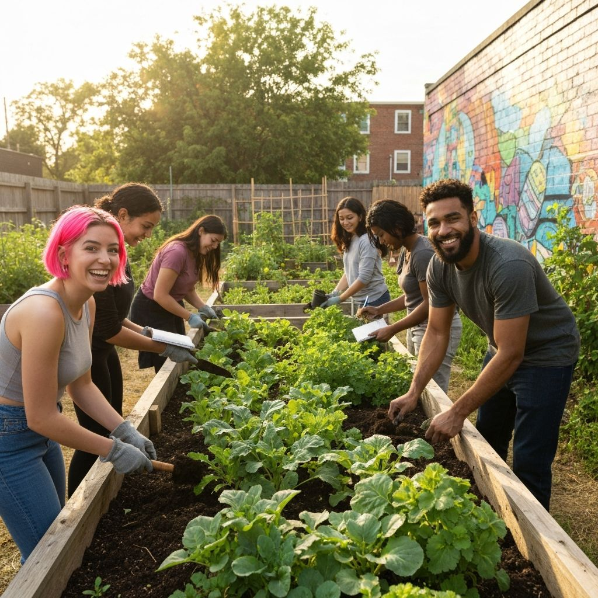
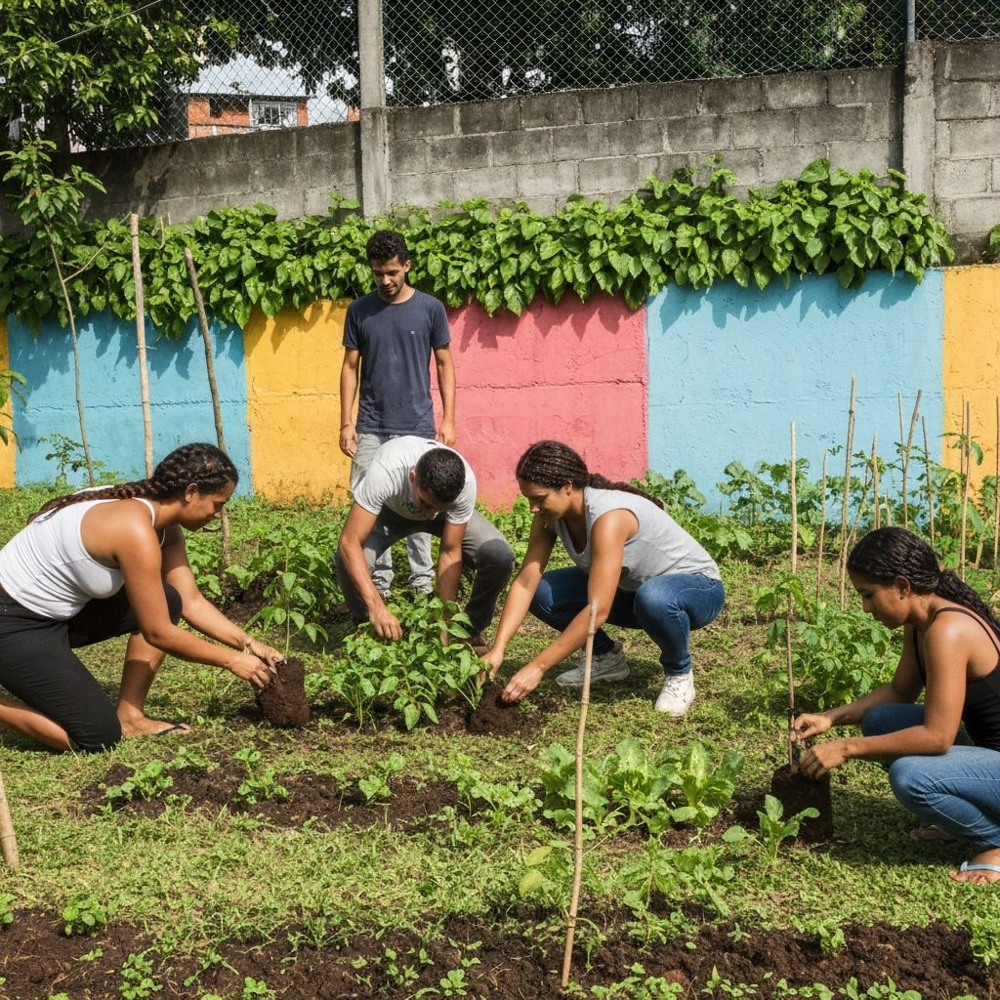

Janela para o mundo da transformação urbana
Explore a riqueza da natureza urbana e descubra como transformamos concreto em vida através das nossas hortas comunitárias em São Paulo.
Apoie Nosso Trabalho
Explore a riqueza da natureza urbana e descubra como transformamos concreto em vida através das nossas hortas comunitárias em São Paulo.
Apoie Nosso TrabalhoO Raízes Urbanas é uma iniciativa socioambiental que conecta jovens periféricos a universidades para formação ecológica aplicada, ciência cidadã e participação política comunitária.
Promovemos equidade no acesso a espaços verdes e protagonismo comunitário.
Fortalecemos a organização popular e gestão coletiva de projetos ambientais.
Desenvolvemos consciência ecológica articulada à leitura política do território.

Jovens periféricos de 14–20 anos
Comunidades urbanas e escolas públicas
Moradores e coletivos comunitários

Famílias e associações de bairro

Coordenadora de Extensão

Facilitador Comunitário

Bióloga e Educadora

Mobilização Juvenil
Sua contribuição fortalece nossos projetos e ajuda a formar jovens lideranças nos territórios periféricos de São Paulo. Cada doação é um passo em direção a um futuro mais justo e sustentável.
100% destinado aos projetos sociais
Prestação de contas mensal